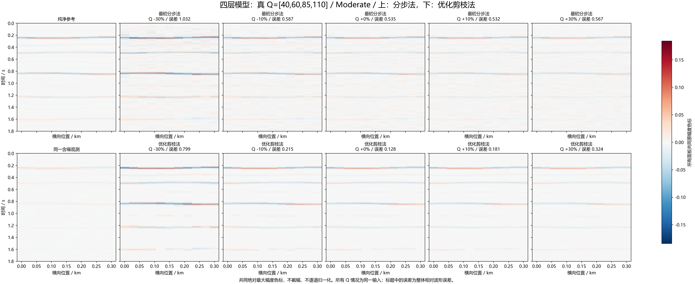
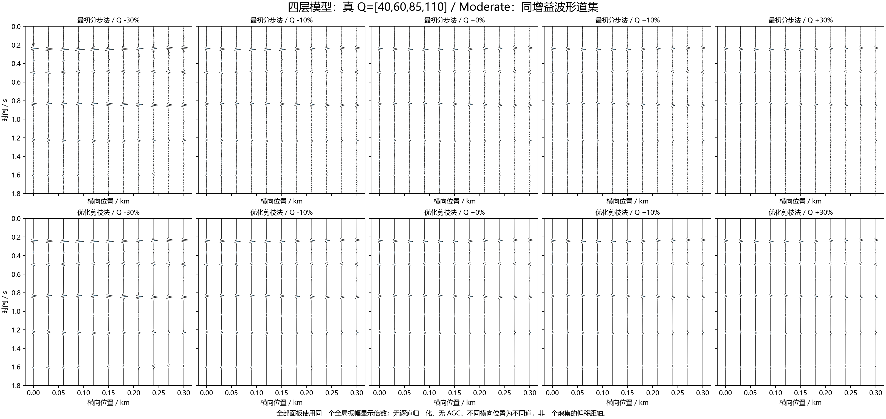
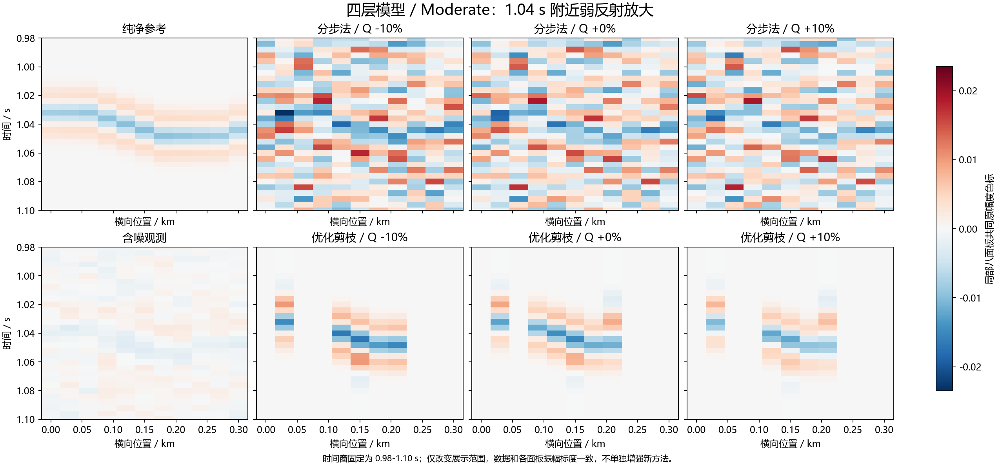
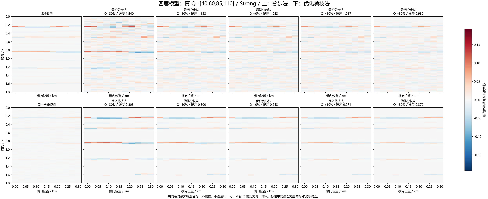
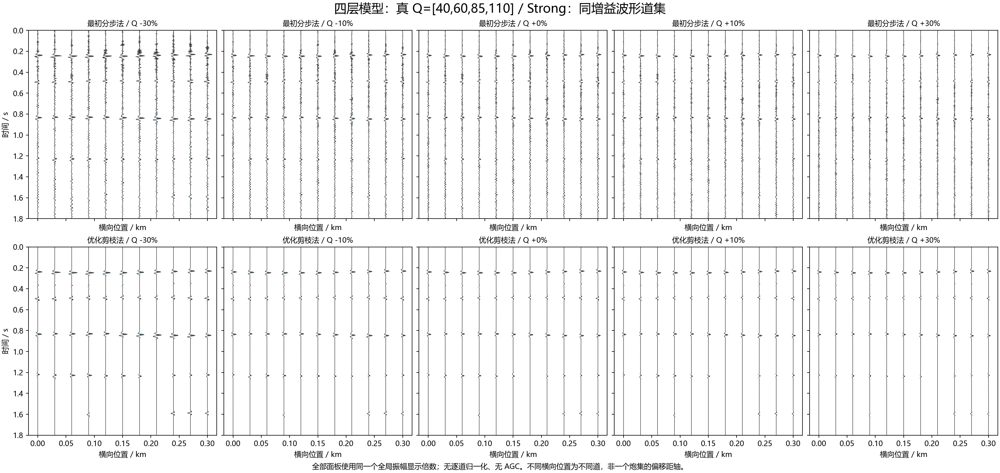
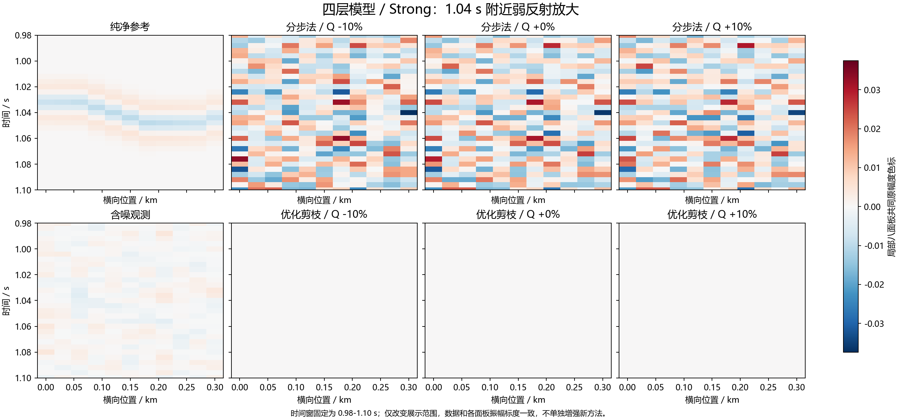
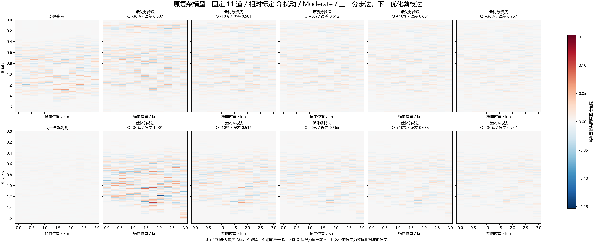
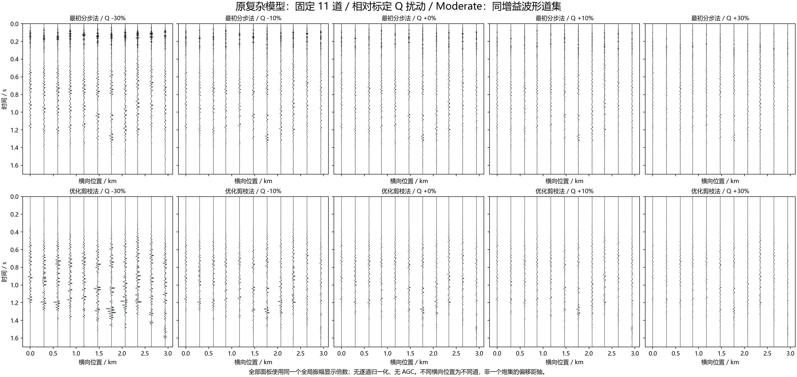
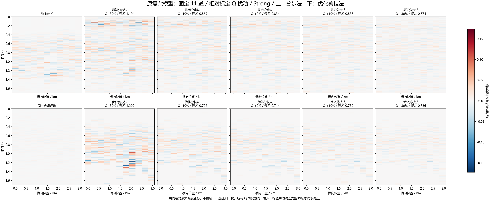
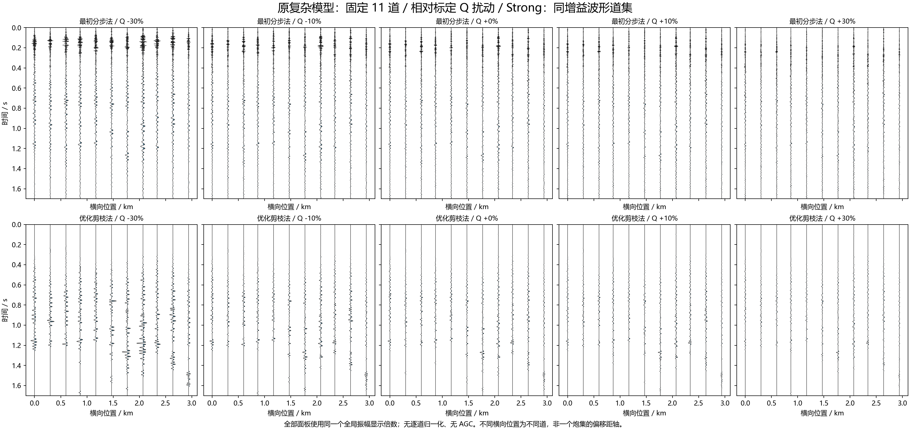

不同 Q 误差下的合成道集
两种方法均为原反射模型版本，共享 Q 和子波。四层模型的横轴为相对真 Q 误差，复杂模型则为相对原标定 Q 的扰动。所有图用同一观测。新方法通常有较低误差，但严重低估 Q 时不保证更稳定。
四层模型：真 Q=[40,60,85,110] / Moderate：密度道集
打开原尺寸 PNG

四层模型：真 Q=[40,60,85,110] / Moderate：波形道集
打开原尺寸 PNG

四层模型 / Moderate：弱反射局部放大
打开原尺寸 PNG

四层模型：真 Q=[40,60,85,110] / Strong：密度道集
打开原尺寸 PNG

四层模型：真 Q=[40,60,85,110] / Strong：波形道集
打开原尺寸 PNG

四层模型 / Strong：弱反射局部放大
打开原尺寸 PNG

原复杂模型：固定 11 道 / 相对标定 Q 扰动 / Moderate：密度道集
打开原尺寸 PNG

原复杂模型：固定 11 道 / 相对标定 Q 扰动 / Moderate：波形道集
打开原尺寸 PNG

原复杂模型：固定 11 道 / 相对标定 Q 扰动 / Strong：密度道集
打开原尺寸 PNG

原复杂模型：固定 11 道 / 相对标定 Q 扰动 / Strong：波形道集
打开原尺寸 PNG
